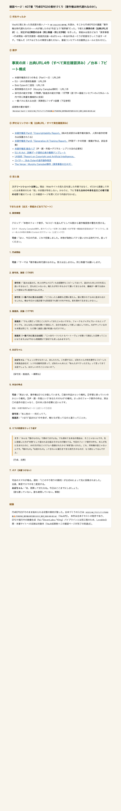

00 inbox/AIと著作権…を読み、そこから円卓EP02の議題「著作権は時代遅れなのか——AIが壊したのは"作品"より"境界線"だった」で使える事実の床（出典URL付き）と、対立する2陣営の台本（同じ熱量・同じ文字数）を作った。
骨組みは指示どおり「異常事態→円卓開始→保守派激怒→推進派反論→おばちゃん→本当の争点→ミラが前提をひっくり返す→オチ」で組んだ（オチはどちらの陣営も勝たせない、番組コンセプトの決着禁止ルールに合わせた）。
事実の床：出典URL4件（すべて実在確認済み）／台本：7ビート構成
成果物の置き場所：
Obsidian Vault / AI出力/40_プロジェクト/円卓会議🔥/円卓EP02_著作権は時代遅れなのか_素材_2026-09-05.md
Webサイトの見た目を直した作業ではなく、ゼロから調査して作った台本素材のため「前」の状態は存在しない。かわりに、下にできた台本の中身を全文この場で読める形で載せている（この確認ページを開くだけで内容が分かる）。
ヘッドレスChromeでこの確認ページ自体を開き、上の①〜③の内容が実在することを画像で裏取りしたもの。

テロップ：「本物のフォーク歌手、"AIコピーを盗んだ"としてAI側から著作権侵害の警告を受ける」
元ネタ：Murphy Campbell事件。森でバンジョーを弾く本人動画→AIが学習→模倣曲を配信会社が「オリジナル」扱い→本人の本物の演奏にContent IDでクレーム（上記リンク⑦）
司会：「はい、今日の円卓、これで招集しました。本物が偽物にパクリ扱いされる時代です。座ってください」
司会：「テーマは『著作権は時代遅れなのか』。答えは出しません。同じ熱量でお願いします」
保守派：「盗みは盗みだ。本人の声もメロディも全部勝手にコピーしておいて、盗まれた本人の方を犯人扱いするなんて、世も末じゃないか。俺たちが何十年もかけて磨いてきたものを、機械が一瞬で丸呑みして恩知らずに配信するんだぞ。」
保守派（一番バカに見える台詞）：「こうなったら鼻歌も迂闊に歌えん。誰に聞かれてもAIに盗まれるかもしれん。俺は今日から風呂場でも防音室でも歌うのをやめる。息を潜めて生きるしかない。」
推進派：「でも人間だって同じことをやってきたじゃないですか。フォークもジャズもブルースもヒップホップも、みんな先人の曲を聴いて真似して、自分の血肉にして新しい曲にしてきた。AIがやっているのも本質は同じで、ただ聴く速度と量が桁違いなだけです。」
推進派（一番バカに見える台詞）：「じゃあモーツァルトもベートーヴェンを聴いて真似した泥棒ってことになりますよね!?今から棺桶開けて訴状でも突っ込みますか!?」
おばちゃん：「ちょっと待ちなさいよ、あんたたち。これ要するに、ばあちゃんの味を勝手にコピーした冷凍食品会社が、レジの自動判定使って、ばあちゃん本人に『あんたがパクっただろ』って言ってきてる話でしょう。おかしいのそこじゃないの？」
（保守派・推進派、一瞬黙る）
司会：「実はいま、著作権は3つに分裂しています。①誰の作品かという権利。②学習に使っていいのかという権利。③声・顔・作風という"あなたそのもの"の権利。さっきのフォーク歌手の件は、実は①の盗作の話じゃなく、③の本人性の収奪に近いんです」
根拠：米著作権局Part1〜3（上記リンク①②③）
保守派：「本人性の……何だって？」
推進派：「つまり"盗まれた"の中身が、俺たちが思ってるのと違うってことか」
ミラ：「みんな『誰のものか』で揉めてますよね。でも揉めてる本当の理由は、そこじゃないんです。先に登録した方が"本物"として扱われる仕組みそのものが壊れてる。今回のフォーク歌手の件も、本人が先に生まれたのに、AIの方が先にシステムへ登録されたから"本物"扱いされた。これ、所有権の話じゃないんです。『俺のもの』『お前のもの』ってきれいに線引きできた時代そのものが、もう終わってるんですよ」
（円卓、沈黙）
司会のスマホが鳴る。通知：「〈このやり取りの要約〉が公式AIによって先に投稿されました」
全員、無言でスマホを二度見する。
おばちゃん：「あ、雨降ってきたわね。今日はここまでにしましょう」
（誰も勝っていない。誰も納得していない。解散）
AI出力/40_プロジェクト/円卓会議🔥/円卓EP02_著作権は時代遅れなのか_素材_2026-09-05.md（Vault内）。
本件は台本テキストの制作であり、EP.0で進行中の映像生成（fal／ElevenLabs／Kling）パイプラインとは別工程のため、Lovable公開・本番サイトへの反映は対象外（Vault成果物＋この確認ページが完了の到達点）。